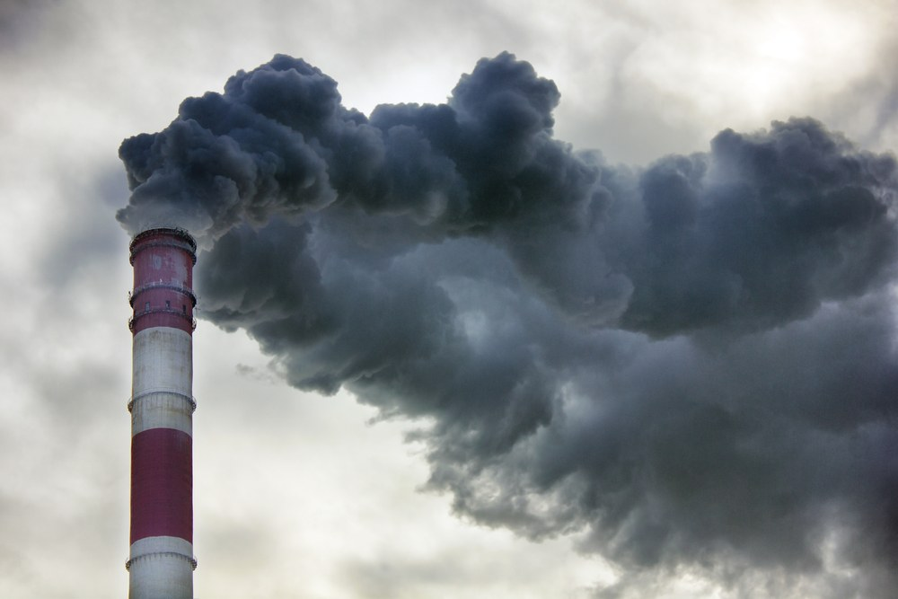
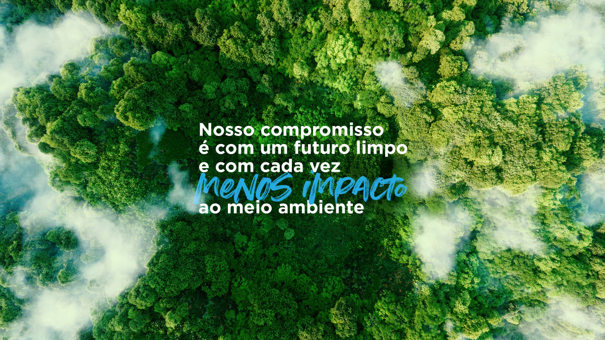

Bem-vindo
Bem-vindo a uma exploração abrangente dos conceitos fundamentais relacionados à poluição do ar.
Para acessar informações detalhadas, navegue pelas opções acima e mergulhe em uma variedade de tópicos relacionados à poluição do ar, desde suas causas e efeitos até estratégias de mitigação.
Causas da Poluição do Ar
A poluição do ar pode ser causada po várias fontes, incluindo:
- Emissões de veículos a motor
- Indústrias e fábricas
- Queima de combustíveis fósseis
- Desmatamento
- Atividades agrícolas
Essas atividades liberam poluentes como dióxido de enxofre, óxidos de nitrogênio, material particulado e outros, contribuindo para a degradação da qualidade do ar.

Efeitos da Poluição do Ar
A poluição do ar pode causar problemas de saúde, danificar o meio ambiente e contribuir para as mudanças climáticas

Soluções para a Poluição do Ar
- Promoção de Energias Renováveis
- Transporte Sustentável
- Políticas de Gestão de Resíduos
- Uso Eficiente de Energia em Edificações
- Tecnologias de Controle de Emissões
